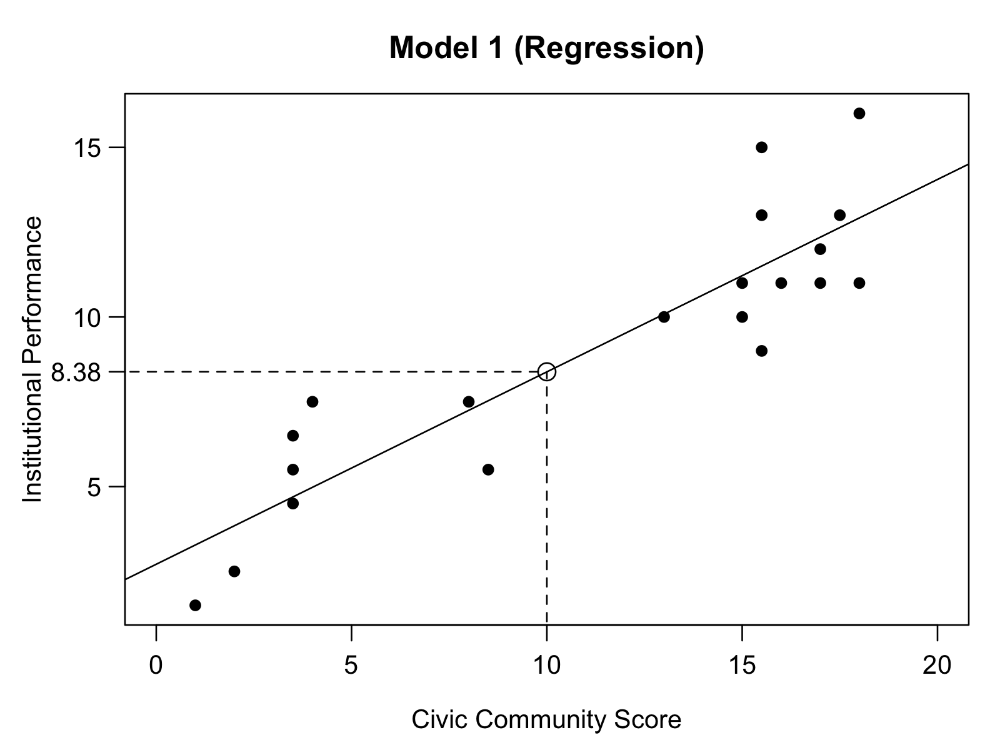

# See what you have in the environment.
ls()
#> [1] "a"
#> [2] "a_squared"
#> [3] "definitely_not_needed_for_this_session"
#> [4] "df_that_will_probably_confuse_me_if_not_removed"
#> [5] "leftover_object"
#> [6] "some_data_from_some_other_time"
# I have no use of any of these. Let's remove them.
rm(list = ls())7 Bivariate Regression
7.1 Starting Routine
We are going to analyse Putnam’s data. First, check what you have in your environment using ls().
Next, load ggplot because we are going to need it for visualisation.
library(ggplot2)Let’s continue with loading Putnam’s data. It can be downloaded from module Blackboard page. Keep your files tidy and put it under your data directory.
# load the data (df stands for data frame)
df <- read.csv("data/putnam.csv")
# display data
df
#> Region InstPerform CivicCommunity NorthSouth EconModern
#> 1 Ab 7.5 8.0 South 7.0
#> 2 Ba 7.5 4.0 South 3.0
#> 3 Cl 1.5 1.0 South 3.0
#> 4 Cm 2.5 2.0 South 6.5
#> 5 Em 16.0 18.0 North 13.0
#> 6 Fr 12.0 17.0 North 14.5
#> 7 La 10.0 13.0 North 12.5
#> 8 Li 11.0 16.0 North 15.5
#> 9 Lo 11.0 17.0 North 19.0
#> 10 Ma 9.0 15.5 North 10.5
#> 11 Mo 6.5 3.5 South 2.5
#> 12 Pi 13.0 15.5 North 17.0
#> 13 Pu 5.5 3.5 South 4.0
#> 14 Sa 5.5 8.5 South 8.5
#> 15 Si 4.5 3.5 South 5.5
#> 16 To 13.0 17.5 North 14.5
#> 17 Tr 11.0 18.0 North 12.5
#> 18 Um 15.0 15.5 North 11.0
#> 19 Va 10.0 15.0 North 15.0
#> 20 Ve 11.0 15.0 North 13.5# Probably a better option of seeing data in R Studio:
#View(df) 7.2 Scatter Plot
This week, we are interested in InstPerform and CivicCommunity. We are trying to explain InstPerform (our outcome variable) with CivicCommunity (our explanatory variable).
Let’s create a scatter plot.
ggplot(data = df, aes(x = CivicCommunity, y = InstPerform)) +
geom_point() +
labs(y = "Institutional Performance",
x = "Civic Community Score"
)It is also possible to use region labels rather than just points. Use the Region variable to label each point accordingly.
ggplot(data = df, aes(x = CivicCommunity, y = InstPerform)) +
geom_text(aes(label = Region)) +
labs(y = "Institutional Performance",
x = "Civic Community Score"
)7.3 Regression
Next, we are going to run a regression. Recall the lecture for generic formula to draw a regression line.
\[ y = \alpha + \beta * x \]
Here, the outcome variable (Y) is InstPerform. Explanatory variable (X) is CivicCommunity.
# run linear regression: (lm stands for linear model)
lm(formula = InstPerform ~ CivicCommunity, data = df)
#>
#> Call:
#> lm(formula = InstPerform ~ CivicCommunity, data = df)
#>
#> Coefficients:
#> (Intercept) CivicCommunity
#> 2.7112 0.5673The results of the regression is directly displayed. The intercept refers to \(\alpha\), which is 2.71. The slope, which is also called the regression coefficient or \(\beta\) for CivicCommunity is 0.57.
We can say that one unit increase in CivicCommunity is associated with 0.57 unit increase in InstPerform.
An alternative way to run the same code is the following.
# Alternative code
lm(df$InstPerform ~ df$CivicCommunity)
#>
#> Call:
#> lm(formula = df$InstPerform ~ df$CivicCommunity)
#>
#> Coefficients:
#> (Intercept) df$CivicCommunity
#> 2.7112 0.5673They are equivalent. Feel free to use the version that you find easiest.
It is a good idea to put your regression results into an object. lm() has generated much more than it displays on screen.
# regression model (m1: model 1)
m1 <- lm(InstPerform ~ CivicCommunity, data = df)You can use summary() to check the output in the object m1.
# summary of model 1:
summary(m1)
#>
#> Call:
#> lm(formula = InstPerform ~ CivicCommunity, data = df)
#>
#> Residuals:
#> Min 1Q Median 3Q Max
#> -2.5043 -1.3481 -0.2087 0.9764 3.4957
#>
#> Coefficients:
#> Estimate Std. Error t value Pr(>|t|)
#> (Intercept) 2.71115 0.84443 3.211 0.00485 **
#> CivicCommunity 0.56730 0.06552 8.658 7.81e-08 ***
#> ---
#> Signif. codes: 0 '***' 0.001 '**' 0.01 '*' 0.05 '.' 0.1 ' ' 1
#>
#> Residual standard error: 1.789 on 18 degrees of freedom
#> Multiple R-squared: 0.8064, Adjusted R-squared: 0.7956
#> F-statistic: 74.97 on 1 and 18 DF, p-value: 7.806e-08Overall output is slightly longer than what we need. Let’s focus on some parts that we are usually interested in:
- Estimate is the respective estimates for the coefficients.
- Std. Error is the standard error. It quantifies the uncertainty in our estimates.
- Pr(>|t|) refers to statistical significance and is related to uncertainty in our estimations. A value below 0.05 is often considered as statistically significant, which indicates that the relationship is unlikely due to sampling variability.
- Adjusted R-squared refers to how good the overall model fit. It is a value between 0 and 1. 0.80 means, the 80% of the variation in
InstPerformcan be explained withCivicCommunity.
A lot of info is provided here, but we may not need all of it. Let’s just have a simplified table. To have a publication-quality table output, we use the texreg package. To install it, make sure to run the code install.packages("texreg").
library(texreg)
#> Warning: package 'texreg' was built under R version 4.2.3
#> Version: 1.39.3
#> Date: 2023-11-09
#> Author: Philip Leifeld (University of Essex)
#>
#> Consider submitting praise using the praise or praise_interactive functions.
#> Please cite the JSS article in your publications -- see citation("texreg").Use screenreg().
# texreg's screenreg function displays regression results on the screen.
screenreg(m1)
#>
#> =========================
#> Model 1
#> -------------------------
#> (Intercept) 2.71 **
#> (0.84)
#> CivicCommunity 0.57 ***
#> (0.07)
#> -------------------------
#> R^2 0.81
#> Adj. R^2 0.80
#> Num. obs. 20
#> =========================
#> *** p < 0.001; ** p < 0.01; * p < 0.05wordreg(m1, "my_output.docx")texreg package provides many options. You can see the full documentation of texreg here: https://cran.r-project.org/web/packages/texreg/texreg.pdf
You can also use R help files, for example: ?wordreg().
7.4 Visualisation
Let’s add a regression line to the scatter plot. Also, save our output.
ggplot(data = df, aes(x = CivicCommunity, y = InstPerform)) +
geom_point() +
geom_smooth(method = "lm") +
labs(y = "Institutional Performance",
x = "Civic Community Score"
)
#> `geom_smooth()` using formula = 'y ~ x'# save the plot:
ggsave(file="model1.pdf", width=8, height=6)
#> `geom_smooth()` using formula = 'y ~ x'7.5 Exercise
Using world_in_2010.csv, carry out the regression as formulated below.
\[ FemaleLifeExpectancy = \alpha + \beta * InfantMortalityRate \] Interpret the output. Provide appropriate visualisations.
7.6 Summary
In reading a regression table, make sure to follow these steps.
- Identify the regression line (equation):
\[ Y = \_\_\_ + \_\_\_ * X\]
- Identify the sign of your coefficients (\(\alpha\) and \(\beta\)) and interpret them:
screenreg(m1)
#>
#> =========================
#> Model 1
#> -------------------------
#> (Intercept) 2.71 **
#> (0.84)
#> CivicCommunity 0.57 ***
#> (0.07)
#> -------------------------
#> R^2 0.81
#> Adj. R^2 0.80
#> Num. obs. 20
#> =========================
#> *** p < 0.001; ** p < 0.01; * p < 0.05Coefficients: \(\alpha = 2.71\) and \(\beta = 0.57\).
\(\alpha = 2.71\) means that when \(X\) is 0, the predicted value of \(Y\) is 2.71.
\(\beta = 0.57\) means that a one-unit increase in \(X\) is associated with an increase of 0.57 in \(Y\).
This is sometimes called the marginal effect of \(X\) (the size of \(\beta\)). The word effect here is kind of a misnomer because it encourages you to think in terms of cause and effect. However, it is a commonly used word, so we are going to use it as well, but do not think this in terms of causality.
7.7 Prediction
Running this regression, we created a statistical model which guesses the expected \(Y\) values when we give some \(X\) values. In this respect, the regression line is the prediction line. You can think regression as predictive modelling.
For a given value of \(X\), the line gives us the predicted value of \(Y\), or simply \(\hat{Y}\). \(\hat{Y}\) reads as \(Y \ hat\) and means the \(predicted\ value\ of\ Y\).
\[When\ X = 0 \ \ \rightarrow\ \ \ \hat{Y} = 2.71 + 0 * 0.57 = 2.71 \] \[When\ X = 1 \ \ \rightarrow \ \ \hat{Y} = 2.71 + 1 * 0.57 = 3.28\]
\[When\ X = 1 \ \ \rightarrow \ \ \hat{Y} = 2.71 + 2 * 0.57 = 3.85\] \[...\]
7.7.1 Predict function in R
You can use predict() to get \(\hat{Y}\) for your regression model. The input of predict() is our regression output, which is stored in the object m1.
predict(object = m1)
#> 1 2 3 4 5 6 7 8
#> 7.249547 4.980350 3.278452 3.845751 12.922540 12.355241 10.086044 11.787942
#> 9 10 11 12 13 14 15 16
#> 12.355241 11.504292 4.696700 11.504292 4.696700 7.533197 4.696700 12.638891
#> 17 18 19 20
#> 12.922540 11.504292 11.220642 11.220642Note that 20 predictions are printed. This is equal to the number of observations in our data. You can save this in a variable in df.
# predicted values of Institutional Performance according to m1
df$m1_yhat <- predict(object = m1)
# View(df)Let’s visualize these predicted values of Institutional Performance. They will form a line.
ggplot(df, aes(x = CivicCommunity, y = m1_yhat)) +
geom_point(color = "red") +
labs(x = "Civic Community",
y = "Predicted values of Institutional Performance")Indeed, these predicted values are all on the regression line.
ggplot(data = df, aes(x = CivicCommunity, y = InstPerform)) +
geom_smooth(method = "lm", se = F, color = "black") +
geom_point(aes(x = CivicCommunity, y = m1_yhat),
color = "red", size = 4) +
labs(y = "Institutional Performance",
x = "Civic Community Score"
)
#> `geom_smooth()` using formula = 'y ~ x'7.7.2 Prediction with new values of x
Imagine that we have a new region with a Civic Community Score of 10 and we would like to predict its likely Institutional Performance using our regression model.
Let’s remind ourselves the regression model:
\[\hat{y} = \alpha + \beta * x \]
So when CivicCommunity is 10:
\[x = 10 \ \ \rightarrow \ \ \hat{y} = \alpha + 10 * \beta \]
We have estimated the model coefficients, namely \(\alpha\) and \(\beta\). You can directly go into model coefficients using the approach below.
# model coefficients (m1):
m1$coefficients
#> (Intercept) CivicCommunity
#> 2.7111528 0.5672993
# m1 alpha:
m1$coefficients[1]
#> (Intercept)
#> 2.711153
# m1 beta:
m1$coefficients[2]
#> CivicCommunity
#> 0.5672993We could ask R to calculate \(\alpha + 10 * \beta\) by writing each of the constituent parts:
m1$coefficients[1] + 10 * m1$coefficients[2]
#> (Intercept)
#> 8.384146However, this is not necessary because predict() function is capable of handling different \(X\) values that we may plug in. We need to use the option newdata, which takes a data frame.
# Predict yhat (model: m1) when x = 10
predict(m1, newdata = data.frame(CivicCommunity = 10))
#> 1
#> 8.384146
Predicted Institutional Performance is 8.38 when Civic Community is 10, according to our regression model (m1).
We can also give multiple \(x\) values to predict() function.
# Predict yhat (model: m1) when x is 1,2,3,......18, 19, 20
x_values <- data.frame(CivicCommunity = seq(1, 20, 1)) # create x values
# predict:
predict(m1, x_values)
#> 1 2 3 4 5 6 7 8
#> 3.278452 3.845751 4.413051 4.980350 5.547649 6.114949 6.682248 7.249547
#> 9 10 11 12 13 14 15 16
#> 7.816847 8.384146 8.951445 9.518745 10.086044 10.653343 11.220642 11.787942
#> 17 18 19 20
#> 12.355241 12.922540 13.489840 14.0571397.8 Prediction Error
Predicted institutional performance \((\hat{y})\) from model 1 are not perfect – and they should not me. These are estimates after all. The estimate is a little bit off for each observation.
The difference between \(y\) (actual realization of the outcome) and \(\hat{y}\) (our estimate using the regression model) is called the error term of the model and demonstrated with \(e\).
\[ y_i = \hat{y}_i + e_i \]
\[ y_i - \hat{y}_i = e_i \]
\(e_i\) is sometimes called residual. Residual and error are used interchangeably. Each error is visualised in Figure 7.3 below.

Calculating each error term is straightforward.
# calculate the error term
df$m1_error <- df$InstPerform - df$m1_yhat
# they are also stored in m1
# error terms (residuals) of the regression:
m1$residuals
#> 1 2 3 4 5 6
#> 0.25045269 2.51964992 -1.77845215 -1.34575146 3.07745959 -0.35524110
#> 7 8 9 10 11 12
#> -0.08604386 -0.78794179 -1.35524110 -2.50429213 1.80329958 1.49570787
#> 13 14 15 16 17 18
#> 0.80329958 -2.03319697 -0.19670042 0.36110925 -1.92254041 3.49570787
#> 19 20
#> -1.22064248 -0.220642487.9 Model Fit
As we discussed in the lecture, regression line is drawn by minimizing the sum of squared values of \(e_i\). We minimize \(\sum_{i=1}^{n}e_i^2\) to estimate model coefficients. This approach is called ordinary least square (OLS) regression.
We can check how good the regression line fits the data. This is called goodness of fit. We have two measures of goodness of fit. - R squared (\(R^2\)) - Root Mean Squared Error (RMSE)
screenreg(m1, include.rmse = T)
#>
#> =========================
#> Model 1
#> -------------------------
#> (Intercept) 2.71 **
#> (0.84)
#> CivicCommunity 0.57 ***
#> (0.07)
#> -------------------------
#> R^2 0.81
#> Adj. R^2 0.80
#> Num. obs. 20
#> RMSE 1.79
#> =========================
#> *** p < 0.001; ** p < 0.01; * p < 0.057.9.1 R Squared
\(R^2\) shows how much variation in \(Y\) is explained by \(X\). \(R^2\) ranges between 0 and 1. In our regression, \(R^2 = 0.81\), which means 81% variation in \(Y\) is explained by \(X\). This value is equal to the square of \(r\) (correlation coefficient).
# correlation coefficient squared:
cor(df$InstPerform, df$CivicCommunity) ^ 2
#> [1] 0.8063829Adjusted \(R^2\) introduces a small correction to a measurement issue in \(R^2\). It introduces a penalty to \(R^2\) based on how many variables we have in the model. Adjusted \(R^2\) is lower than \(R^2\) because it is penalized. For our purposes, it is a technical detail and it does not really matter if you use \(R^2\) or Adjusted \(R^2\).
7.9.2 RMSE
Root Mean Squared Error (a.k.a. residual standard error) shows how much \(\hat{y_i}\) is different from \(y_i\). In texreg, we can include it by adding the option include.rmse = T. It is also possible to manually calculate it.
# root mean squared residuals
sqrt(sum(m1$residuals^2)/m1$df.residual)
#> [1] 1.789021